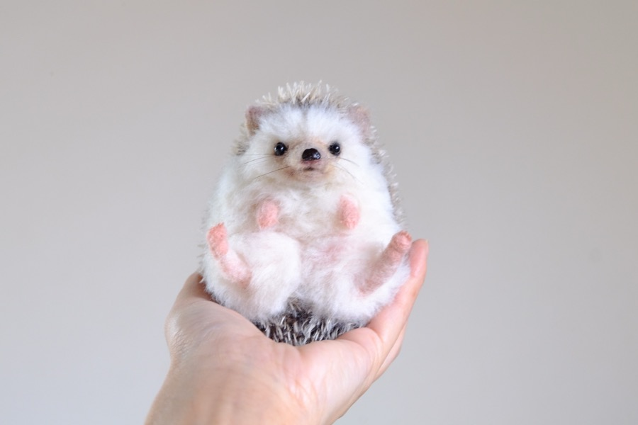

さくだゆうこ

さくだ ゆうこ
可愛い食器と美味しい食事、ゆったり時間の流れる癒しのカフェが大好きです。
忙しく、足を運べなくなったことでおうちをカフェにしてしまおうと考えました。子供の頃から大好きだった動物たちをモチーフに、カフェ雑貨を作ることから生まれたyucoco cafeは今ではたくさんの動物たちを生み出しています。
可愛い仕草と表情の、キュンとする動物達、ふわふわほっこりぬくもりのある羊毛フェルト。
疲れた心と身体に染み渡る、癒しの動物を、みなさまのおうちにもお届け出来れば嬉しいです。
yucoco cafe Yuko Sakuda